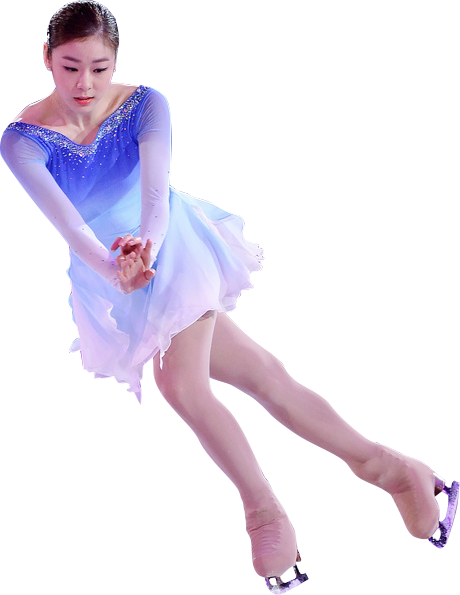
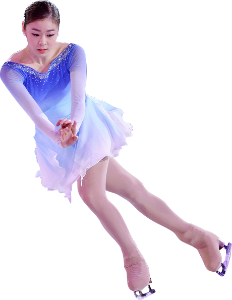
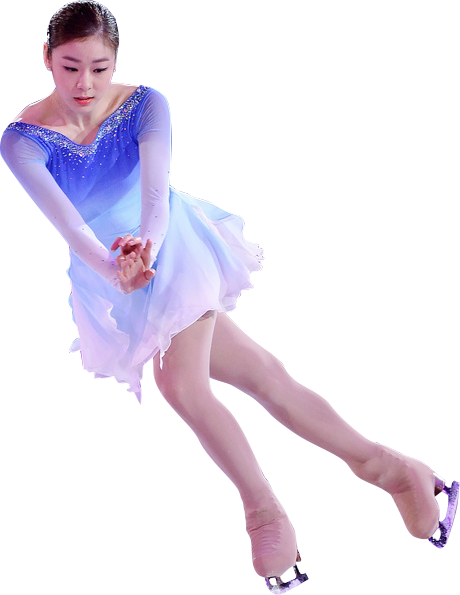
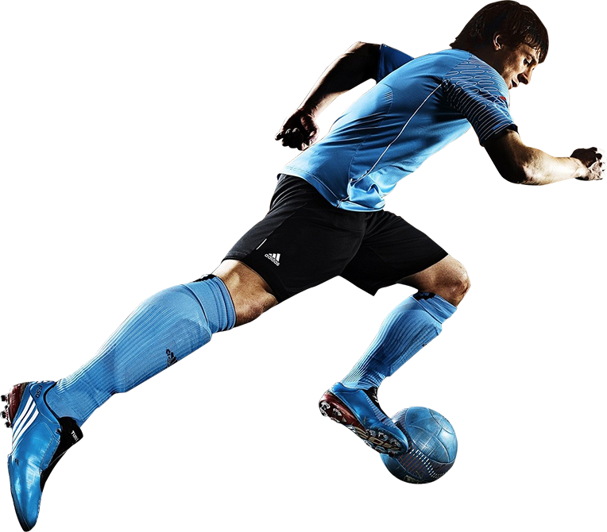
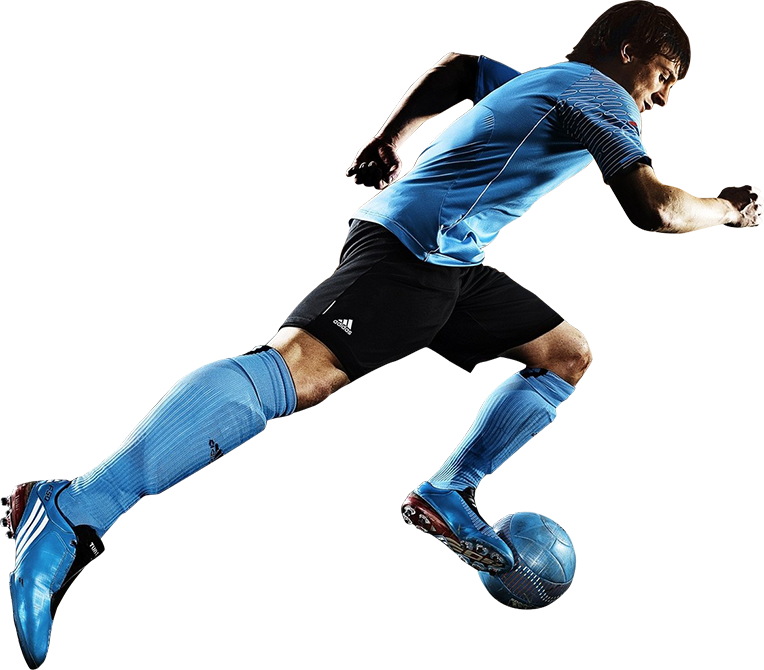
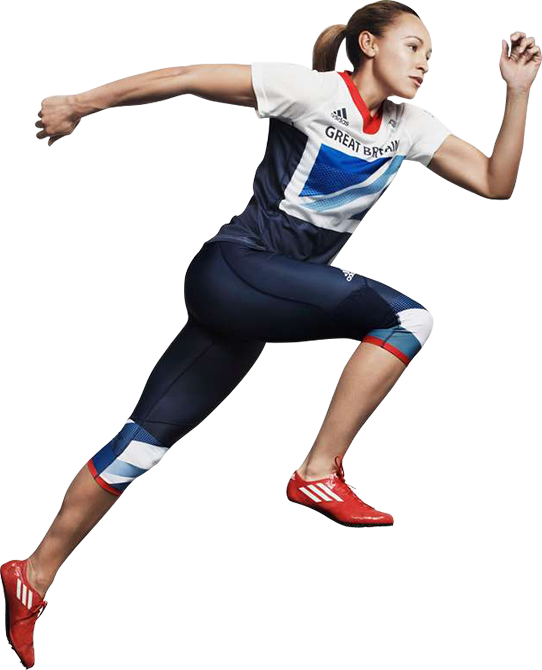
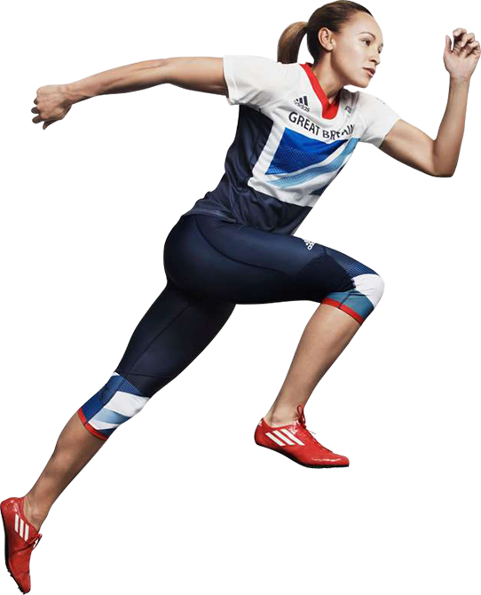
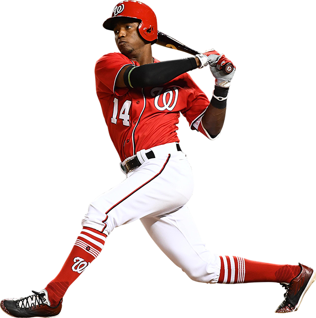
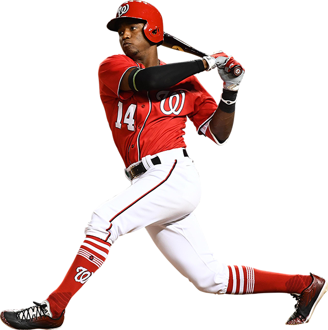

Figure Skating
Figure skating is a Sport in which individuals, duos, or groups perform on figure skates on ice. It was the first winter sport included in the Olympics, in 1908.

Figure Skating
Figure skating is a Sport in which individuals, duos, or groups perform on figure skates on ice. It was the first winter sport included in the Olympics, in 1908.
Snowboarding
Snowboarding is a recreational activity and Olympic and Paralympic sport that involves descending a snow-covered slope while standing on a snowboard attached to a rider's feet.
 

Soccer
Association football, more commonly known as football or soccer, is a team sport played between two teams of eleven players with a spherical ball.
 

100 metres
The 100 metres at the Summer Olympics has been contested since the first edition of the multi-sport event. The men's 100 m has been present on the Olympic athletics programme since 1896 and the women's 100 m has been held continuously since its introduction at the 1928 Games. The 100 metres is considered one of the blue ribbon events of the Olympics and is among the highest profile competitions at the games.
 

Baseball
Baseball is a bat-and-ball game played between two teams of nine players each, who take turns batting and fielding. The batting team attempts to score runs by hitting a ball (that is thrown by the opposing team's pitcher) with a bat swung by the batter, and then running counter-clockwise around a series of four bases: first, second, third, and home plate. A run is scored when a player advances around the bases and returns to home plate.